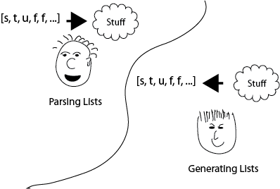
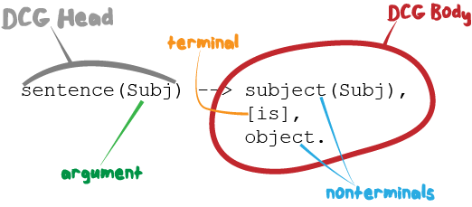

Annie
By Anne Ogborn
Thanks to Markus Triska. Large sections of this tutorial are taken directly from his tutorial, which is used by permission here.
Introduction 1 Definite Clause Grammars 2 Relating Trees To Lists 3 Left Recursion 4 Right-hand Context Notation 5 Implicitly Passing States Around 6 Parsing From Files 7 Implementation 8 Error Handling 9 A Few Practical Hints Conclusion
Anyone who:
The second item goes far beyond the usual task of parsing text most programmers associate with DCG's. We'll convert a tree to a list in this tutorial. A DCG could convert a 2D array into a sparse array, or look for patterns in a data stream.
But, we traditionally associate DCG's with parsing text. So we'll give you some tools for parsing text as well.

Is this you?
To get the most from this course, you'll need to
Different people will have different backgrounds and learning styles. Whatever works for you works.
If you have questions and reasonable effort doesn't answer them, drop me email at aogborn (somechar) uh.edu. Please, if you're taking a beginning Prolog course, ask your instructor. Questions about family trees will be ignored. But if you're working on a real DCG related problem, feel free.
Asking on ##Prolog on freenode.net IRC is also a good way to get answers.
A Prolog definite clause grammar (DCG) describes a Prolog list.
Operationally, DCGs can be used to parse and generate lists.
A DCG is defined by DCG rules. A DCG rule has the form:
head --> body.
Analogous to normal Prolog rules with:
head :- body.
A rule's head is a (non variable) Prolog term.
A rule's body is a sequence of terminals and nonterminals, separated by commas.
A terminal is a Prolog list, which stands for the elements it contains.
some_terminals -->
[this, is, a, teminal],
[so, is, this],
"code strings are also lists, so this too is a terminal".
A nonterminal refers to a DCG rule or other language construct, which stand for the elements they themselves describe.
Declaratively, we can read the comma as "and then" in DCGs.

As an example, let us describe lists that only contain the atom 'a'. We shall use the nonterminal as//0 to refer to such lists:
as --> [].
as --> [a], as.
The first rule says: The empty list is such a list. The second rule says: A list containing the atom 'a' and then only atoms 'a' is also such a list.
To execute a grammar rule, we use Prolog's built-in phrase/2 predicate. The first argument is a DCG body. phrase(Body, Ls) is true iff Body describes the list Ls.
The most general query asks for all solutions:
?- phrase(as, Ls).
Ls = [] ;
Ls = [a] ;
Ls = [a, a] ;
Ls = [a, a, a] ;
Ls = [a, a, a, a] ;
etc.
Examples of more specific queries and the system's answers:
?- phrase(as, [a,a,a]).
true.
?- phrase(as, [b,c,d]).
false.
?- phrase(as, [a,X,a]).
X = a.
Exercises:
1) run 1_1. Add another DCG that creates an alternating series of a's and b's, so your output should look like:
Ls = [] ;
Ls = [a] ;
Ls = [a, b] ;
Ls = [a, b, a] ;
Ls = [a, b, a, b] ;
etc.
2) Try the queries above in 'examples of more specific queries'
Double quoted strings "some text" are lists of char codes
(this behavior is changeable in SWI-Prolog). This makes for a convenient syntax with
literals as strings:
cliche -->
thing,
" is a ",
type_of_thing,
" trapped in a ",
opposite_type_of_thing,
" body.".
thing --> "Cygwin".
type_of_thing --> "Unix OS".
opposite_type_of_thing --> "Windows'".
?- phrase(cliche, X, []),format('~s~n', [X]).
Cygwin is a Unix OS trapped in a Windows' body.
Arguments in head and body terms become formal and actual arguments, as in the :- operator.
To execute a regular Prolog predicate from within a DCG body,
we use the DCG language construct {}//1.
This example demonstrates both concepts.
fizz_buzz(Msg) --> anything, fizz(Msg), anything, buzz, anything.
anything --> [].
anything --> [_], anything.
fizz(Msg) -->
"fizz",
{
format('At fizz we have Msg=~w~n', [Msg])
}.
buzz -->
"buzz".
Exercises:
1) Modify the 'cliche' example above to also print
Fluffy is a dog trapped in a cat's body.
Bob the swimmer is a fish trapped in a human body.
and so on, but not Fluffy is a fish trapped in a human body. Hint - use arguments to ensure you don't print
Bob the swimmer is a dog trapped in a Windows' body.
2) Try the queries above in 'examples of more specific queries'
The ; operator allows alternatives. This matches a book, an book, a car, or an car
article_phrase --> ("a" ; "an"),
" ",
noun.
noun --> "book".
noun --> "car".
3) Write a program to generate random well formed English sentences for a small subset of English.
The \+ operator matches the empty sequence if and only if the material beyond does not
match its argument
By using the construct \+ you are giving up many of the nice
algebraic properties grammars are known for. In particular, you can
no longer be sure that a grammar generates the sentences it accepts.
anything_but_joe --> \+ [joe].
2 ?- listing(anything_but_joe).
anything_but_joe(A, B) :-
\+ A=[joe|_],
B=A.
One particularly useful sequence is
at_end --> \+ [_].
Which matches the end of the list.
Exercise:
Implement a demonstration of the at_end nonterm.
The -> operator means 'if followed by', and is semantically near comma, so is infrequently used
ab_or_c --> [a] -> [b] ; [c].
ab --> [a] -> [b].
6 ?- phrase(ab_or_c, X, []).
X = [a, b].
7 ?- phrase(ab_or_c, [a,b], []).
true.
8 ?- phrase(ab_or_c, [c], []).
true.
9 ?- phrase(ab, [a,b], []).
true.
10 ?- phrase(ab, [c], []).
false.
3 ?- listing(ab).
ab(A, C) :-
( A=[a|B]
-> B=[b|C]
).
true.
4 ?- listing(ab_or_c).
ab_or_c(A, C) :-
( A=[a|B]
-> B=[b|C]
; A=[c|C]
).
true.
One construct where -> can produce clarity is controlling alternatives with {}
something(X) -->
({ is_wobbly(X) } ->
"a wobbly ",
thing
;
"a stable ",
thing
).
Arguments allow us to capture and use the input list. In this example any digits after
boop must match the digits after beep, so the string must look like "trash beep14 foo blah boop14 mep"
beep_boop --> anything, beep(Suffix), anything, boop(Suffix), anything.
beep(X) -->
"beep",
suffix(X).
boop(X) -->
"boop",
suffix(X).
suffix([H|T]) -->
[H], % The magic - we grab the digit here
{
code_type(H, digit)
},
suffix(T).
suffix([]) --> []. % must be 2nd suffix clause, or the digits wind up in anything
% At bottom for efficiency. At the top, would match beep first
anything --> [].
anything --> [_], anything.
% A subtlety here. "foo 7 beep1 bar boop14 fdds" is part of the language
Exercise:
1) Make a little library of DCG's that match valid identifiers for other languages you know.
A DCG head with functor f and arity N is referred to as f//N to distinguish it
from a regular Prolog predicate, which we refer to as f/N.
The actual arity of a DCG is 2 more than the number of arguments (so html//1 is arity 3)
A gotcha - matching nothing is
nothing --> [].
not
% DONT DO THIS
nothing.
So what about variables in the body?
foo(Bar) -->
"mep",
Bar,
lemons.
They are expanded to the first argument of phrase/3, so
if Bar in the above is ground to a term it will be treated as a common Prolog predicate, and
if bound to a list as a DCG terminal.
Let us now use a DCG to relate a binary tree to the in-order sequence of its node names. Let us assume a binary tree consists of leaves of the form nil and inner nodes of the form node(Name, Left, Right), where Left and Right are themselves binary trees. To obtain the in-order sequence of node names, consider:
tree_nodes(nil) --> [].
tree_nodes(node(Name, Left, Right)) -->
tree_nodes(Left),
[Name],
tree_nodes(Right).
Example:
?- phrase(tree_nodes(node(a, node(b, nil,
node(c, nil, nil)),
node(d, nil, nil))), Ns).
Ns = [b, c, a, d].
You can obtain other orders by moving the terminal [Name] in the DCG body.
Conversely, given a sequence of node names, what are the trees that yield this sequence?:
Note: Save your work before running this!
?- phrase(tree_nodes(Tree), [a,b,c,d]).
Tree = node(a, nil, node(b, nil, node(c, nil, node(d, nil, nil)))) ;
(... program never finishes ...)
The system yields one (correct) solution, then loops. This is because the grammar is left-recursive: We recursively refer to a nonterminal tree_nodes//1 before anything else. To be able to use this grammar for finding all matching trees, we need to encode that for the second rule to apply, at least one list element must be available since the rule contains exactly one terminal, and we need to check this in advance to avoid unbounded recursion. We can do this by introducing two additional arguments that let us limit the number of rule applications to the given list's length:
tree_nodes(nil, Ls, Ls) --> [].
tree_nodes(node(Name, Left, Right), [_|Ls0], Ls) -->
tree_nodes(Left, Ls0, Ls1),
[Name],
tree_nodes(Right, Ls1, Ls).
Example:
?- Ns = [a,b,c,d], phrase(tree_nodes(Tree, Ns, _), Ns).
Ns = [a, b, c, d],
Tree = node(a, nil, node(b, nil, node(c, nil, node(d, nil, nil)))) ;
Ns = [a, b, c, d],
Tree = node(a, nil, node(b, nil, node(d, node(c, nil, nil), nil))) ;
Ns = [a, b, c, d],
Tree = node(a, nil, node(c, node(b, nil, nil), node(d, nil, nil))) ;
etc.
Exercise:
1) a useful DCG to have in your snippet bin is one that matches anything. Write one.
2) use a dcg to convert a sparse sequence like [0,0,0,0,0,0,7,4,3,0,0,0,0,0,0,0,8,9,14,0,0,0,0....] to
[zero(6), 7,4,3, zero(7),8,9,14,...]
3) does it work in both directions?
Using right-hand context notation, also called pushback lists, lets you insert list elements that were initially not in the list that is being parsed. A DCG rule of the form:
Head, [T_1,...,T_n] --> Body.
can be read operationally as: parse the list using Body, then prepend the terms T_1, ..., T_n to the remaining list. For example:
nt1, [b] --> [a].
nt2 --> [b].
The body of nt1//0 describes a list whose single element is the atom 'a'. Operationally, after nt1//0 has consumed the atom 'a' in a list that is being parsed, it inserts the atom 'b' in front of the remaining list. nt2//0 describes a list whose single element is the atom 'b'. The following query therefore succeeds, since nt2//0 consumes the atom 'b' that is left in the list after nt1//0 succeeds:
?- phrase((nt1,nt2), [a]).
true.
We can also use nt1//0 in isolation. However, the following query fails since phrase/2 only succeeds if all list elements are consumed by the given DCG body:
?- phrase(nt1, [a]).
false.
The difference list version phrase/3 shows what remains after nt1//0 succeeds:
?- phrase(nt1, [a], Rest).
Rest = [b].
As expected, the atom 'b' remains in the list.
Using right-hand context notation, we can implement look ahead, which lets us inspect the next element in the list without removing it. Operationally, we first remove it and then push it back:
look_ahead(T), [T] --> [T].
Example:
?- phrase(look_ahead(T), [a], Rest).
T = a,
Rest = [a].
Right-hand context notation is also useful to implicitly pass around a state representation that is only accessed and changed by a subset of rules. For example, let us count the leaves in a binary tree with the above presentation. The state we shall pass around is a single number denoting the number of leaves encountered so far. To increment the state, we use Prolog's built-in arithmetic.
To execute a regular Prolog predicate from within a DCG body,
we use the DCG language construct {}//1. Operationally,
when the construct {Goal} is executed in a DCG body, Goal is
executed as a regular Prolog goal. Since a DCG must always describe a list, we
wrap the state into a list and thus describe a list containing a single element.
Notice that the second rule makes no reference at all to the state, since the number of leaves is not modified when an inner node is processed:
num_leaves(nil), [N1] --> [N0], { N1 is N0 + 1 }.
num_leaves(node(_,Left,Right)) -->
num_leaves(Left),
num_leaves(Right).
Example query, where the initial state is sensibly specified as 0, and the number of leaves is given by the remaining list element after num_leaves//1 succeeds:
?- phrase(num_leaves(node(a,node(b,nil,nil),
node(c,nil,
node(d,nil,nil)))), [0], [N]).
N = 5.
In SWI-Prolog, DCGs can be transparently applied to files using library(pio).
Consider for example the following DCG that describes a list of character codes:
like(What) --> "I like ", list(What), ".", list(_).
list([]) --> [].
list([L|Ls]) --> [L], list(Ls).
We can use this DCG to parse a given string, which is a list of character codes:
?- phrase(like(What), "I like it. The rest is ignored").
What = [105, 116] ;
false.
As expected, What is unified with the character codes for i and t.
Using library(pio), we can transparently parse from a file with the same DCG. Assume that the file 'like.txt' starts with the string "I like it."
?- use_module(library(pio)).
true.
?- phrase_from_file(like(What), 'like.txt').
What = [105, 116] ;
false.
Again, What is unified with the character codes for i and t.
To see how DCGs are internally implemented in SWI-Prolog, you can use listing//1. For example, to see the actual source code for num_leaves//1:
?- listing(num_leaves//1).
num_leaves(nil, A, D) :-
A=[B|C],
E is B+1,
F=C,
D=[E|F].
num_leaves(node(_, A, C), B, E) :-
num_leaves(A, B, D),
num_leaves(C, D, E).
We see that internally, the two DCG rules of num_leaves//1 were translated into regular Prolog rules with two additional arguments, following mechanical rewriting steps. The translation of DCGs to regular Prolog code is done by term_expansion/2, a mechanism analogous to macros in other languages.
For portability, it is best not to rely on a particular expansion method, and instead to stick to regular DCG constructs like right-hand context notation to refer to states and the phrase/2 interface to execute a DCG.
Exercises:
1) Modify the exercise you did for 1_2 to accept a bit more English, without adding any more explicit DCG's. Write the additional productions as ordinary Prolog predicates instead.
In practice we want a lot more than to just throw up our hands when the input doesn't match the language we understand. When we can't continue parsing, we need to print an intelligent error message and then continue parsing the file.
A program that effectively quits on encountering an input error isn't very friendly. Imagine you've fed a 1000 line program to your compiler, and it stops on an error on line 2. You fix the error, run it again, it gets to line 7. It's going to be a long day...
We want to find a place that's probably beyond the actual error, where we can guess we're at a known point in the parse, and 'resync' the parser.
Suppose we have a language whose methods end in a semicolon. Part of our parser might look like
my_language --> [].
my_language --> a_method, ";", my_language.
a_method --> ... some stuff ....
To recognize an error, our basic strategy is to expand the language our parser recognizes so it includes every string. If it's not part of the language, it's part of the error stuff.
We could do that with something like the code in red:
my_language --> [].
my_language --> a_method, ";", my_language.
my_language --> error_stuff,
{ format('darn that''s an error', []) }.
a_method --> ... some stuff ....
error_stuff -->
error_stuff_helper.
error_stuff_helper --> [].
error_stuff_helper --> [_], error_stuff_helper.
At this point we're little better off. How much input is error, and when should we start expecting to see well formed program again? Finding a point to start parsing again is called 'resynching' the parser.
Since methods in our language end with semicolons, a reasonable place for use to resynch is after hitting a semicolon.
my_language --> [].
my_language --> a_method, ";", my_language.
my_language --> error_stuff, ";",
{ format('darn that''s an error', []) },
my_language.
a_method --> ... some stuff ....
error_stuff -->
error_stuff_helper.
error_stuff_helper --> [].
error_stuff_helper --> [_], error_stuff_helper.
Of course you can have more than one level of resync. The sooner you can resync, the more accurately you'll locate errors for your users.
Exercises:
1) Pick a computer language. Find points in its' syntax where you could restart after an error.
2) Look at syntax errors in your own code and the compiler messages they generate. How accurately did the message locate the error?
Ever had a message like 'Syntax Error in input' printed by a program when you fed it 500,000 lines of data? Isn't that helpful? Including the line number in the input is pretty much a necessity.
If you're using phrase_from_file/2 you're in luck. line_count/2 and line_position/2 will give you your location for free.
For complex grammars it's often worthwhile to first lexically parse tokens, and then parse that token stream for the real grammar.
If you do this, or if you've gotten your input list somewhere other than a file, you'll have to use other methods to preserve line numbers.
One way to do it is to insert tokens in the input stream, then carry them along with right hand context notation. Alternatively, one can just count them and pass as an argument.
If the language is such that the location can be recognized from a few lines of code, a simple trick suffices. Introduce a 'service' production to print out the remainder of the list, or a fraction thereof. This is also handy for debugging.
x --> p, "a", x.
x --> "".
p(L, L) :- format('~s~n', [L]). % or do something fancier with L
One could truncate L, or scan forward in L looking for a line number marker if there's been a lexical pass.
For some languages, it can be useful to have the entire chain of nonterminals the user is nested in. prolog_current_frame/1 and prolog_frame_attribute/3 would let you unwind the stack. If you explicitly pass the line number, you can show line numbers. This is an advanced trick.
A handy set of commonly used DCG primitives is available in
DCG Basics. This lib has recently moved out of the http stuff, if you have an older version it may be elsewhere as http/dcg_basics.pl.
:- use_module(library(dcg/basics)).
Will get you a handy dandy mass of DCG's to identify commonly parsed items like numbers, strings up to a delimiter, etc.
For complex grammars it's often worthwhile to first lexically parse tokens, and then parse that token stream for the real grammar. Doing this often makes handling these things easier:
Every so often a new Prolog programmer will ask "where's the regular expression library?"
With DCG's built into the language there's no need for a regex library.
In conclusion, I'd remind you - if you're working with lists, DCG's can definitely make your life easier. They're not just for parsing any more!
Thanks for taking this tutorial. If I can improve anything please email me at aogborn (hat) uh.edu.
If you make something beautiful, drop us a link.
Thanks,
This tutorial is based on a tutorial by Markus Triska, so a special nod to him.
Ulrich Neumerkel, Richard O'Keefe, Carlo Capelli, and Paulo Moura patiently explained many points on the swipl email list.
Michael Richter applied his thorough critical eye to the text.
Props to the Sanskrit grammarian Paañini, who first formalized grammar.
Annie